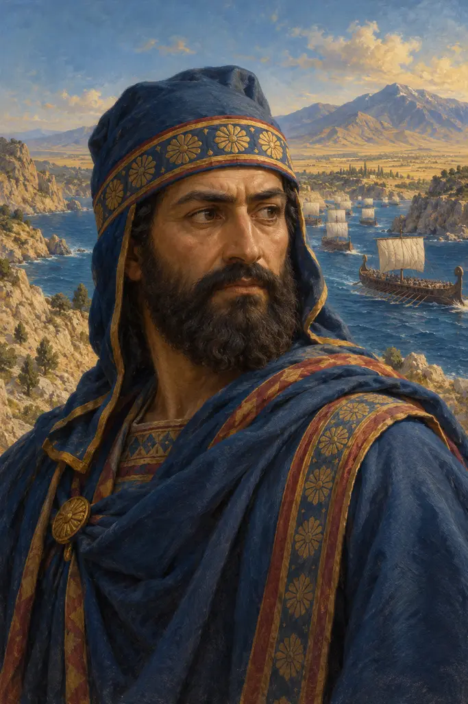
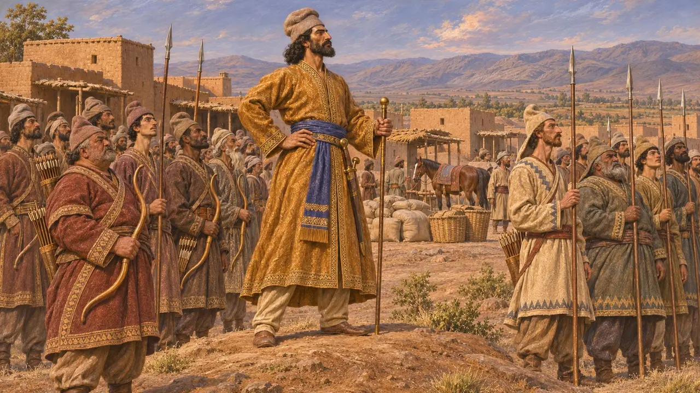
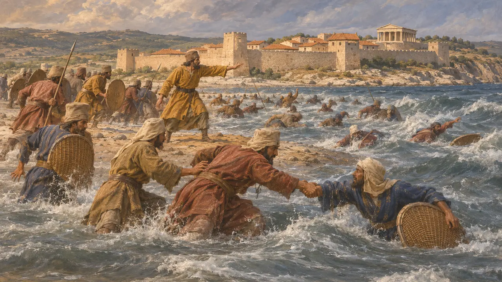
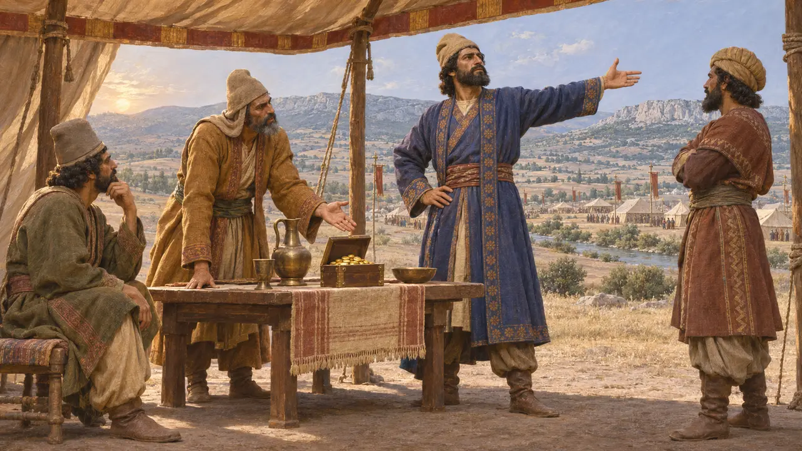
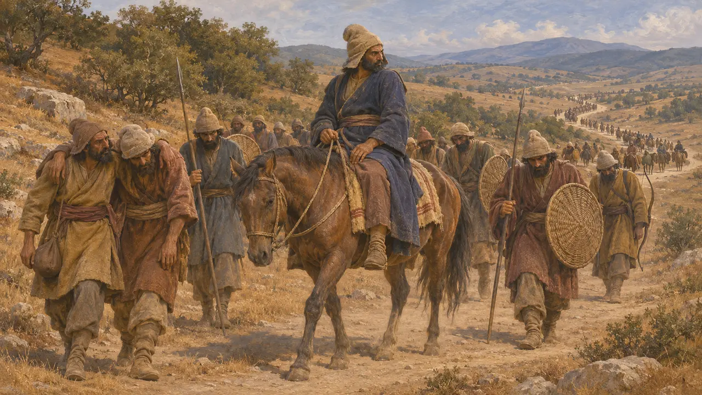
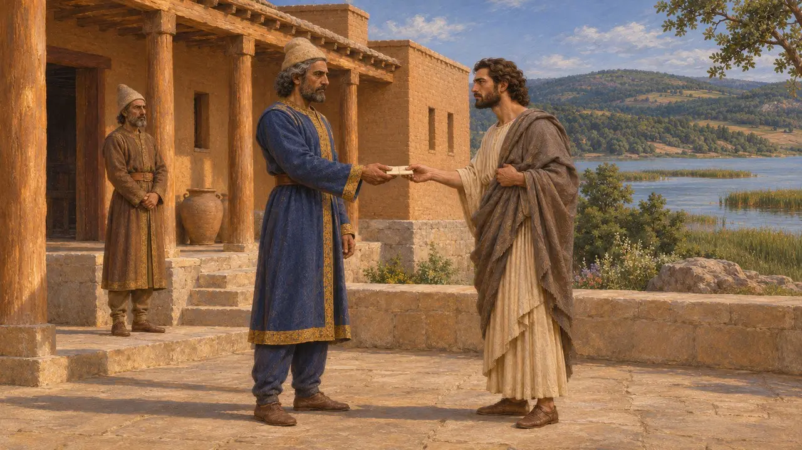

Артабаз
Персидский полководец при Ксерксе, позднее сатрап в Даскилии, действовал с 480 года до н. э.
В игре: Уровень 11: Финал
Артабаз, сын Фарнака, был видным персидским вельможей и командовал войсками во время вторжения Ксеркса в Грецию. По словам Геродота, он отговаривал от сражения при Платеях в 479 году и, когда битва была проиграна, увёл свой корпус домой. Позднее он управлял Даскилийской сатрапией близ Геллеспонта, где его род удерживал власть на протяжении поколений.
В игре: Примечание летописи игры близко следует Геродоту. Сорок тысяч воинов — число Геродота, возможно, преувеличенное. Его путь лежал через Фокиду, Фессалию, Македонию и Фракию к Византию, откуда он переправился в Азию.

Сын Фарнака
СпорныйГеродот называет его сыном Фарнака и сообщает, что в войске Ксеркса он командовал парфянами и хорасмиями. Многие историки отождествляют этого Фарнака с Парнакой — высоким сановником, который, согласно табличкам из крепостной стены Персеполя, управлял царским хозяйством в окрестностях города и, вероятно, приходился Дарию родственником. Эта связь держится в основном на имени, датировке и высоком положении семьи, поэтому остаётся предположением современных исследователей.
Herodotus 7.66; D. M. Lewis, Sparta and Persia, 1977; P. Briant, From Cyrus to Alexander, 2002

Потидея и Олинф
Античное свидетельствоПо словам Геродота, после Саламина Артабаз с шестьюдесятью тысячами воинов сопроводил Ксеркса до Геллеспонта, а затем повернул обратно в Халкидику. Он взял Олинф, перебил его жителей и передал город Критобулу Торонскому и халкидянам. Осада Потидеи провалилась спустя три месяца, когда необычный прилив потопил многих его воинов; потидейцы объясняли это гневом Посейдона за оскорбление, которое персы нанесли его храму.
Herodotus 8.126-129

Совет перед Платеями
Античное свидетельствоГеродот сообщает, что в 479 году до н. э., когда войска стояли друг против друга у Асопа, Артабаз убеждал Мардония не вступать в бой. Он предлагал отступить к Фивам, где было вдоволь припасов, и послать золото влиятельным людям греческих городов, чтобы расколоть их союз. Мардоний, полагаясь на своё войско, отверг этот совет и решил атаковать.
Herodotus 9.41-42

Путь домой
Античное свидетельствоПо словам Геродота, Артабаз был недоволен тем, что командование досталось Мардонию, и, увидев бегство персов, увёл свой корпус с поля боя, не вступая в сражение. Он прошёл через Фокиду и Фессалию, уверяя фессалийцев, что Мардоний идёт следом, а затем через Македонию и Фракию двинулся к Византию, потеряв много людей от голода и нападений фракийцев. Геродот оценивает его силы в сорок тысяч человек — историки относятся к этому числу с осторожностью.
Herodotus 9.66, 9.89

Сатрап в Даскилии
Античное свидетельствоФукидид сообщает, что позднее Ксеркс послал Артабаза сатрапом в Даскилий, чтобы тот вёл тайные сношения со спартанским регентом Павсанием. Это назначение говорит о том, что Царь не считал его отступление от Платей позором. Его потомки, которых часто называют Фарнакидами, управляли этой сатрапией большую часть следующего столетия.
Thucydides 1.129
Источники
- Herodotus, Histories, Books 7-9
- Thucydides 1.129
- P. Briant, From Cyrus to Alexander, 2002
- D. M. Lewis, Sparta and Persia, 1977
- M. A. Flower and J. Marincola, Herodotus: Histories Book IX, 2002